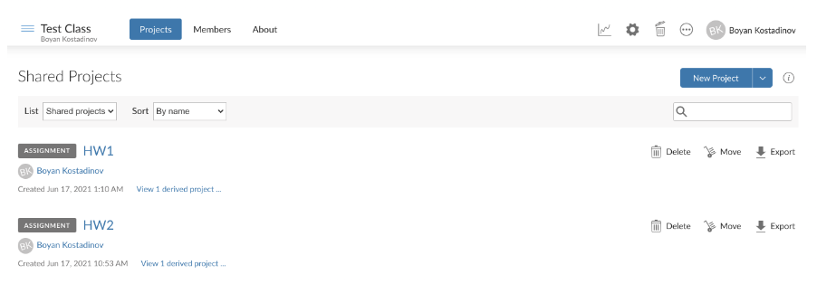
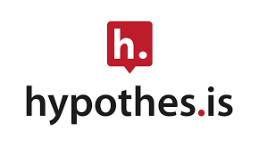
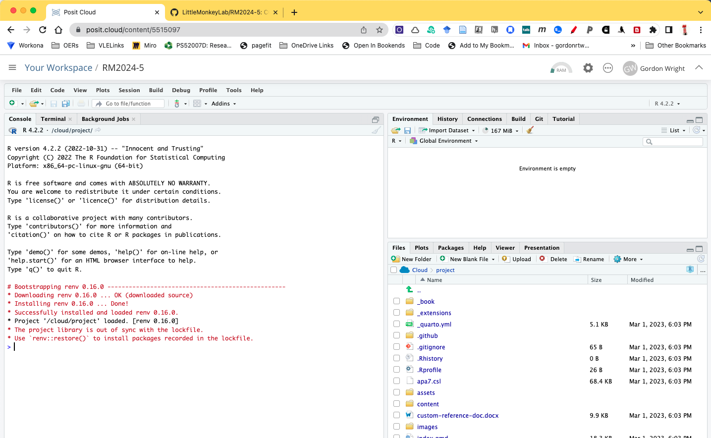
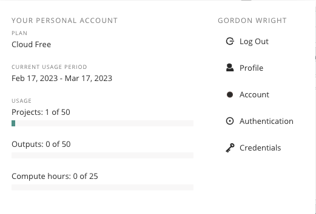

Assessment & Delivery Overview
one word… FUN!!!
Labs should be Practical first.
And nothing that isn’t 100% Goldsmiths or impossible to do at school. No more Milgram.
Flipped stats with screencasts and scaffolded tutorials - regular drop ins and forums
Evidence suggests that a flipped approach to teaching statistics significantly improves student performance (across a range of metrics) at the mean and throughout the achievement distribution, while controlling for baseline student characteristics Sathy & Moore (2020) (see tables 13.3 & 13.4 - specifically Anxiety, preparedness and under-represented minority status).
Assessments
A few words on Assessment
“Authentic assessment” generally refers to assignments that reflect the skills students will use in their post-graduation careers and life more generally. This is distinct from traditional assessments such as closed-book exams and academic essays.
For psychology, authentic assessments may involve the development of traditional science communication skills, such as lab reports, however there is a broader portfolio to choose from! In clinical psychology, Authentic challenges could include formulation of case studies or mock practitioner dialogues. Common challneges for many professions include writing for non-expert audiences, critical evaluation of media materials or the production of media materials that are rigorous… Reflective accounts and portfolios are part of a number of later training roles and research interviews are a hugely powerful transferable skill! All of these are designed to promote psychological literacy by encouraging communication with non-experts and application of psychology content.
Blog writing may be an effective assessment for capturing and promoting students’ psychological literacy. They are also increasingly popular for assessing writing ability and conceptual knowledge. Blog writing may help students take different perspectives, develop a critical appraisal of content, and become more reflective. Given the currency of blogging and the fact that it is a core channel for marketing and social media - it a rich target that assesses a distinctive set of skills. Students seem to enjoy it too.
Blog writing may help students overcome the challenge of academic essay writing (Ishak & Salter, 2017) since it is less rigidly governed by academic norms (Bennett et al., 2012) and involves more reflective, creative, and critical tone (Arslan & Aysel, 2010; Novakovich & Long, 2013). It also provides an opportunity to communicate psychology content to a wider audience (Gardiner et al., 2018; Schmidt, 2008; Relojo, 2017). It has been embedded successfully in many different subjects in higher education, such as pharmacy (Dunne & Ryan, 2016), anthropology (Walker & Chatzigavriil, 2017), professional development (Shanks, 2020), and English literature (Agarwal, 2017). The British Psychological Society, 2019 and the American Psychological Association (2013) stress the importance of critical evaluation and reflection, which is compatible with blog writing. Research shows that blog writing prompts critical thinking and reflection (Chretien et al., 2008; Novakovich, 2016). Challenges to implementing blog writing as an assessment include students having little to no previous experience (Kerawalla et al., 2009). Blog writing should be grounded effectively in course materials, have clear expectations, and be understood through a lens of psychological literacy (Cranney et al., 2008, 2012). We propose that blog writing may provide a useful opportunity to allow students to apply their psychology content in a critical, creative, and non-conventional way.
Blog
Podcast
Website
Posters
Information Packs Macandrew & Edwards (2002)
Portfolios (or ProcessFolio)
Interview (and self-reflection)
Clinical Assessment
Skills assessment
Oral Examination (mock job interview)
Self and Peer evaluation (360º)
Literature Search & Review (with or without annotations)
Annotated Code
Computational documents (Lab Reports)
Design and Proposal (Pre-registration)
Data analysis (Results section)
Technical Overview
Technical Overview
 R is primarily a computer programming language for statistical analysis. It is free, and open-source (many people contribute to developing it), and runs on most operating systems or through an internet browser, and so there are few obstacles to its use by the normal undergraduate population (compare to SPSS).
R is primarily a computer programming language for statistical analysis. It is free, and open-source (many people contribute to developing it), and runs on most operating systems or through an internet browser, and so there are few obstacles to its use by the normal undergraduate population (compare to SPSS).
It is a powerful language that can be used for all sorts of mathematical operations, data-processing, analysis, and graphical display of data - it is used more a more frequently in corporate settings, unlike ‘pay to play’ software such as SPSS.
I even used R to write this lab manual. And, I use R all the time for my own research, because it makes data-analyis fast, efficient, transparent, reproducible, and exciting

Posit is name of the Integrated Development Environment in which the R Language (and Python/Julia/Observable+) are run. It is Open Source and offers free access to everyone.
Posit Cloud is a paid-for service that allows users to access the Posit environment without downloading anything - it’s browser based, and you can run analysis and create publication-ready documents on your phone.
Posit Cloud would likely be my suggestion as to the infrastructure we employ.
Free accounts are available to all students for a processing duration of 25 project hours per month, with free hosting of published content. Instructors pay a small amount, and it can be arranged that payment is made by student, instructor or organisation if a student were to exceed their Posit Cloud allowance.
The point is important to make however, that energised users simply have to download and install the free software and they can use it as much as they want, thus the high-rate users usually, very quickly, wean themselves off the browser-based platform.
The Posit Cloud has classroom functionality and is designed to deliver teaching, tutorials and content


Quarto is an open-source scientific and technical publishing system built on Pandoc. Quarto documents are authored using markdown, an easy to write plain text format.
In addition to the core capabilities of Pandoc, Quarto includes:
Embedding code and output from Python, R, Julia, and JavaScript via integration with Jupyter, Knitr, and Observable.
A variety of extensions to Pandoc markdown useful for technical writing including cross-references, sub-figures, layout panels, hoverable citations and footnotes, callouts, and more.
A project system for rendering groups of documents at once, sharing options across documents, and producing aggregate output like websites and books.
Authoring using a wide variety of editors and notebooks including JupyterLab, RStudio, and VS Code.
A visual markdown editor that provides a productive writing interface for composing long-form documents.
Learn more about Quarto at https://quarto.org.


